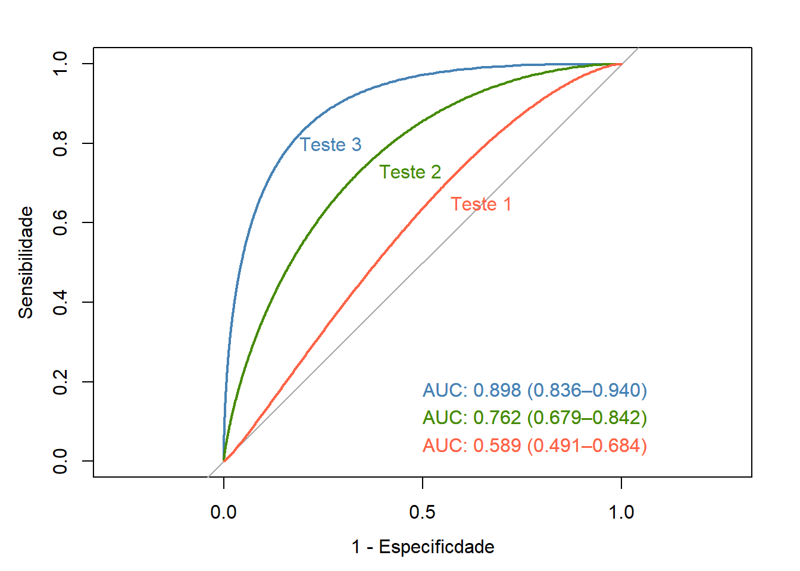

pacman::p_load(dplyr,
epiR,
flextable,
knitr,
pROC,
readxl,
vcd)21 Determinação da validade e confiabilidade de testes diagnósticos
21.1 Pacotes necessários neste capítulo
21.2 Raciocínio Bayesiano no diagnóstico médico
O processo diagnóstico é o centro da atenção da atividade médica na busca de reduzir as incertezas e reconhecer a que classe pertence determinado paciente. Portanto, é extremamente importante saber quão bem os testes diagnósticos podem prever que um indivíduo é portador de certa condição ou doença. Entende-se aqui como teste diagnóstico todo o processo diagnótico, desde o exame clínico até o mais sofisticado exame de imagem ou laboratorial. A ideia é saber como o teste diagnóstico se comporta para separar um “doente” e um “não doente”; qual a sua validade neste processo?
Deve-se sempre ter em mente que o estabelecimento do diagnóstico é um processo imperfeito que resulta em uma probabilidade ao invés de uma certeza de estar correto. Ou seja, cada vez mais os médicos têm que aplicar as leis da probabilidade na avaliação de testes diagnósticos e sinais clínicos.
A abordagem Bayesiana denomina de probabilidade a priori a probabilidade estabelecida inicialmente, baseada apenas na experiência do médico, em seu conhecimento em relação a doença suspeitada. Diante de uma evidência de doença, pode ser solictado um teste diagnóstico. Quando ele recebe um teste positivo para uma doença, a probabilidade muda, passa a ser uma probabilidade condicional, probabilidade da doença dado que o teste é positivo, denominada probabilidade a posteriori.
Um teste que define corretamente quem é doente e quem não é doente é denominado de padrão-ouro ou padrão de referência. Algumas vezes, o teste padrão de referência é simples e barato. Outras vezes, é caro, difícil de obter, tecnicamente complexo, arriscado ou pouco prático. Inclusive, pode não hver padrão-ouro. Em função dessas limitações, outros testes são usados e, como consequência, podem ocorrer erros. Em outras palavras, no processo diagnóstico podem ocorrer falsos positivos e falsos negativos. Esta incerteza, na utilização de testes diagnósticos, gera a necessidade de o médico conferir a probabilidade de falsos positivos e falsos negativos na elaboração de um diagnóstico ao receber o resultado positivo ou negativo de um exame. Uma maneira simples de mostrar as relações de um teste diagnóstico e o verdadeiro diagnóstico, é mostrada na tabela de contingência \(2\times2\) (Tabela 21.1).

21.3 Sensibilidade e Especificidade
As estatísticas mais utilizadas para descrever a validade dos testes de diagnóstico em contextos clínicos são sensibilidade e a especificidade.
Sensibilidade é a habilidade do teste em identificar corretamente quem tem a doença. É a taxa de verdadeiros positivos (VP) de um teste e corresponde a probabilidade de um indivíduo com a doença ter um teste positivo.
Um teste sensível raramente deixará passar pessoas que tenham a doença. Testes com sensibilidade alta são úteis para excluir a presença de uma doença. Isto é, um teste negativo exclui virtualmente a possibilidade de o paciente ter a doença de interesse, pois tem pouca probabilidade de produzir resultados falsos negativos. Isto pode ser lembrado pelo mnemônico SnNout, do inglês: High Sensivity, a Negative result rules out the diagnosis (1).
Especificidade é a habilidade do teste em identificar corretamente quem não tem a doença. É a taxa de verdadeiros negativos (VN) de um teste e corresponde a probabilidade de um indivíduo sem a doença ter um teste negativo. Um teste específico raramente classificará de forma errônea indivíduos sendo portadores da doença quando eles não são. Os testes muito específicos são usados para confirmar a presença da doença. Se o teste é altamente específico, um teste positivo sugere fortemente a presença da doença de interesse.
De forma similar que a sensibilidade pode-se usar o mnemônico SpPin, do inglês: High Specificity, a Positive result rules in the diagnosis (1).
Estas estatísticas de diagnóstico podem ser calculadas a partir das equações, cujas letras representam as caselas da tabela \(2 \times 2\) da Tabela 21.1;
\[ Sensibilidade = \frac {a}{\left (a + c\right )} \quad \quad Especificidade = \frac {d}{\left (b + d\right )} \]
A taxa de falsos negativos (TFN) é a proporção de indivíduos que têm a doença e que têm um resultado de teste negativo e a taxa de falsos positivos (TFP) é a proporção de pacientes que não possuem a doença e que apresentam resultados positivos. Podem ser expressas pelas equações:
\[ TFN= \frac {c}{\left (a + c\right )} \quad ou \quad \left (1 - sensibilidade\right) \]
\[ TFP= \frac {b}{\left (b + d\right )} \quad ou \quad \left (1 - especifcidade\right) \]
Idealmente, um teste de diagnóstico deveria ter altos níveis de sensibilidade e especificidade. No entanto, isso não é possível, pois existe um balanço entre sensibilidade e especificidade. À medida que a especificidade aumenta, a sensibilidade diminui e vice-versa. As curvas ROC podem ser usadas para identificar um ponto de corte em uma medição contínua que maximize a sensibilidade e a especificidade (veja Seção 21.6).
Quando um clínico tem um paciente cujo teste apresentou resultado positivo, a pergunta mais importante é a seguinte: dado que o teste é positivo, qual é a probabilidade de o paciente ter a doença? A sensibilidade do teste não responde a este questionamento, mas sim a probabilidade de um resultado positivo, dado que o paciente tem a doença (2).
21.3.1 Dados do exemplo
Cenário
Foram avaliados 156 pacientes com diagnóstico clínico de apendicite aguda, submetidos à ultrassonografia abdominal e apendicectomia laparoscópica, acompanhado de estudo anatomopatológico dos apêndices extirpados (3).
Os dados estão contidos no conjunto de dados dadosApendicite.xlsx que pode ser obtido aqui. Salve o mesmo em seu diretório de trabalho.
21.3.1.1 Leitura e observação dos dados
Será usado a função read_excel()do pacote readxl para ler os dados e a função str() para observar a sua estrutura:
dados <- readxl::read_excel ("dados/dadosApendicite.xlsx")
str(dados)tibble [156 × 3] (S3: tbl_df/tbl/data.frame)
$ id : num [1:156] 1 2 3 4 5 6 7 8 9 10 ...
$ apendicite: num [1:156] 1 1 1 1 1 1 1 1 1 1 ...
$ eco : num [1:156] 1 1 1 1 1 1 1 1 1 1 ...As variáveis apendicite e eco foram exibidas como variáveis numéricas e serão transformadas em fatores:
dados$apendicite <- factor(dados$apendicite,
levels = c(1,2),
labels = c("Presente",
"Ausente"))
dados$eco <- factor(dados$eco,
levels = c(1,2),
labels = c("Positivo",
"Negativo"))21.3.1.2 Construção de uma tabela de contingência 2$$2
tab_ap <- with(dados, table(eco, apendicite, dnn = c ("Eco", "Apendicite")))
addmargins(tab_ap, FUN = sum)Margins computed over dimensions
in the following order:
1: Eco
2: Apendicite Apendicite
Eco Presente Ausente sum
Positivo 85 7 92
Negativo 46 18 64
sum 131 25 15621.3.1.3 Avaliação do teste diagnóstico através da sensibilidade e da especificidade
Pode-se usar a função epi.tests() do pacote epiR (4) que calcula, junto com os intervalos de confiança exatos, a prevalência aparente e verdadeira, sensibilidade, especificidade, valores preditivos positivos e negativos e razões de probabilidade positivas e negativas a partir de dados de contagem fornecidos em uma tabela \(2\times2\). Utiliza os argumentos
- dat dados sob a forma de vetor ou matriz
- conf.level magnitude do intervalode confiança, entre 0 e 1.
Os resultados serão atribuídos a um objeto de nome diag:
diag <- epiR::epi.tests(tab_ap,
conf.level = 0.95)
print(diag) Outcome + Outcome - Total
Test + 85 7 92
Test - 46 18 64
Total 131 25 156
Point estimates and 95% CIs:
--------------------------------------------------------------
Apparent prevalence * 0.59 (0.51, 0.67)
True prevalence * 0.84 (0.77, 0.89)
Sensitivity * 0.65 (0.56, 0.73)
Specificity * 0.72 (0.51, 0.88)
Positive predictive value * 0.92 (0.85, 0.97)
Negative predictive value * 0.28 (0.18, 0.41)
Positive likelihood ratio 2.32 (1.22, 4.40)
Negative likelihood ratio 0.49 (0.35, 0.68)
False T+ proportion for true D- * 0.28 (0.12, 0.49)
False T- proportion for true D+ * 0.35 (0.27, 0.44)
False T+ proportion for T+ * 0.08 (0.03, 0.15)
False T- proportion for T- * 0.72 (0.59, 0.82)
Correctly classified proportion * 0.66 (0.58, 0.73)
--------------------------------------------------------------
* Exact CIsAssim, a sensibilidade é igual a 65% (IC95%: 56 – 73%) e a especificidade é igual a 72% (IC95%: 51 – 88%). Isto significa que um indivíduo com apendicite aguda tem 65% de probabilidade de ter uma ecografia alterada; um indivíduo sem apendicite aguda tem 72% de probabilidade de ter uma ecografia normal. O objetivo do teste de diagnóstico é usá-lo para fazer um diagnóstico, então há necessidade de saber a probabilidade que o teste fornece para um diagnóstico correto. A sensibilidade e a especificidade não fornecem esta informação. Para atingir esse objetivo, usa-se o valor preditivo (5).
21.4 Valor Preditivo
O propósito de um teste diagnóstico é usar seus resultados para fazer um diagnóstico, portanto, é necessário conhecer a probabilidade de que o resultado do teste forneça o diagnóstico correto (5).
Os valores preditivos positivo e negativo descrevem a probabilidade de um paciente ter doença, uma vez que os resultados de seus testes são conhecidos.
O valor preditivo positivo (VPP) de um teste é definido como a proporção de pessoas com um resultado de teste positivo que realmente têm a doença.
O valor preditivo negativo (VPN) é a proporção de pacientes com resultados de teste negativos que não têm doença.
Como a sensibilidade e a especificidade, estas estatísticas de diagnóstico também podem ser calculadas a partir da tabela \(2\times2\), mostrada no início:
\[ VPP = \frac {a}{\left (a + b\right )} \quad \quad VPN = \frac {d}{\left (c + d\right )} \]
Observando os resultados anteriores da função epi.tests(), verifica-se que 92% (85/92) dos indivíduos que tiveram teste positivo (ultrassonografia alterada) tinham doença (apendicite aguda). Isso significa que seu VPP é igual a 92% (IC95%: 18 – 41%), ou dito de outra forma, uma pessoa com ultrassonografia positiva tem 92% de probabilidade de ter a apendicite aguda. O VPP é também conhecido como probabilidade pós-teste de doença dado um teste positivo.
Dos 64 pacientes que tiveram ultrassonografia sem alterações, 18 não apresentaram apendicite aguda, portanto, um VPN de 28% (IC95%: 56 – 73%). Isso significa que uma pessoa quem tem um teste negativo tem 28,1% de probabilidade de não ter apendicite aguda.
Entretanto, essas proporções são de validade limitada. Os valores preditivos de um teste, na prática clínica, dependem criticamente da prevalência da anormalidade nos pacientes testados. No estudo, a prevalência de apendicite aguda é igual a
\[ \frac {total\ de\ casos\ de \ apendicite \ aguda}{total\ de\ casos\ no\ estudo} = \frac {131}{156} = 0,84\ ou\ 84\% \left(IC_{95\%}:77\ a\ 89\%\right) \]
Levando-se em consideração que a prevalência de apendicite aguda na população é de 7% (6), mantendo a sensibilidade (64%) e a especificidade (72%) da ultrassonografia, entre 156 pacientes, selecionados aleatoriamente, se esperaria encontrar aproximadamente 11 casos (7% de 156) de apendicite aguda. Para facilitar a compreensão, observe a a tabela \(2\times2\) (Tabela 21.2):

O VPP e o VPN são iguais a:
a <- 7
b <- 41
c <- 4
d <- 104
vpp = a/(a + b)
round(vpp, 3)*100[1] 14.6vpn = d/(c + d)
round(vpn, 3)*100[1] 96.3Ao se comparar o VPP obtido, agora, com o VPP do estudo, observa-se que o mesmo diminuiu bastante, de 92% para 14,6%. O contrário ocorre com a VPN que aumenta substancialmente de 28% para 96,3%, mostrando claramente a influência da prevalência.
Se a prevalência diminui, o VPP diminui e o VPN aumenta. Portanto, será errado aplicar diretamente os valores preditivos publicados de um teste ao seu pacciente, quando a prevalência da doença em sua população for diferente da prevalência da doença na população em que o estudo publicado foi realizado. Um teste pode ser útil em um lugar e não ter validade em outro onde a prevalência é muito baixa.
Pode-se chegar aos mesmos resultados, usando as equações:
\[ VPP =\frac{sens \times prev}{\left(sens \times prev\right) + \left [\left (1- espec\right) \times \left (1- prev\right)\right ]} \]
\[ VPN =\frac{espec\times \left (1- prev\right)}{\left[\left (1 - sens \right)\times prev\right]+\left[espec\times \left (1 - prev\right)\right]} \]
A prevalência pode ser interpretada como a probabilidade antes da realização do teste, conhecida como probabilidade pré-teste. A diferença entre as probabilidades pré e pós-teste é uma forma de avaliar a utilidade do teste. Esta diferença pode ser mensurada pela razão de probabilidade (likelihood ratio).
21.5 Razão de Probabilidade
A Razão de Probabilidades (likelihood ratio) é uma forma alternativa de descrever o desempenho de um teste diagnóstico. Alguns autores a denominam de razão de verossimilhança 1.
A razão de probabilidades para um resultado de teste é definida como a razão entre a probabilidade de observar aquele resultado em indivíduos com a doença em questão e a probabilidade desse resultado em indivíduos sem a doença (7).
Razões de probabilidade são, clinicamente, mais úteis do que sensibilidade e especificidade. Fornecem um resumo de quantas vezes mais (ou menos) a probabilidade de os indivíduos com a doença apresentarem aquele resultado específico do que os indivíduos sem a doença, e também podem ser usados para calcular a probabilidade de doença para pacientes individuais (8). Cada vez mais as razões de probabilidade estão se tornando populares para relatar a utilidade dos testes de diagnóstico.
Quando os resultados do teste são relatados como sendo positivos ou negativos, dois tipos de razões de probabilidades podem ser descritos, a razão de probabilidades para um teste positivo (denotada LR +) e a razão de probabilidades para um teste negativo (denotada LR−).
A razão de probabilidades para um teste positivo é definida como a probabilidade de um indivíduo com doença ter um teste positivo dividida pela probabilidade de um indivíduo sem doença ter um teste positivo. A fórmula para calcular LR + é
Ou seja,
\[ LR(+)=\frac{sensibilidade}{1 - especificidade} \]
Razão de probabilidades positiva maior que 1 significa que um teste positivo tem mais probabilidade de ocorrer em pessoas com a doença do que em pessoas sem a doença. De um modo geral, para os indivíduos que apresentam um resultado positivo, LR (+) > 10 aumenta significativamente a probabilidade de doença (“confirma” a doença), enquanto LR (+) < 0,1, virtualmente, exclui a probabilidade de uma pessoa ter a doença (9).
Usando os dados incluídos no objeto diag, obtido com a função epi.tests() do pacote epiR, tem-se que a LR (+) da ultrassonografia para o diagnóstico de apendicite aguda é igual 2.32 (IC95%: 1,22 – 4,40). Significa que uma pessoa com apendicite aguda tem cerca de 2,32 vezes mais probabilidade de ter um teste positivo do que uma pessoa que não tem a doença.
A razão de probabilidade negativa é definida como a probabilidade de um indivíduo com doença ter um teste negativo dividido pela probabilidade de um indivíduo sem doença ter um teste negativo. A fórmula para calcular a LR− é:
Ou seja,
\[ LR(-)=\frac{sensibilidade}{1-especificidade} \]
Razão de probabilidade negativa menor que 1 significa que um teste negativo é menos provável de ocorrer em pessoas com a doença do que em pessoas sem a doença. Um LR muito baixo (abaixo de 0,1) praticamente exclui a chance de que uma pessoa tenha a doença (9).
Voltando aos dados anteriores, a LR (-) para a ultrassonografia é igual a 0.49 (IC95%: 0.35 - 0.68). Significa que a probabilidade de ter um teste negativo para indivíduos com doença é 0,49 vezes ou cerca de metade daqueles sem a doença. Dito de outra forma, os indivíduos sem a doença têm cerca o dobro probabilidade de ter um teste negativo do que os indivíduos com a doença.
21.5.1 Estimando a probabilidade de doença
Uma grande vantagem das razões de probabilidade é que elas podem ser usadas para ajudar o médico a adaptar a sensibilidade e a especificidade dos testes aos pacientes individuais. Ao se atender um paciente em uma clínica, pode-se decidir realizar um teste específico, após uma anamnese e um exame físico. A decisão de fazer o teste baseia-se nos sintomas e sinais do paciente e na experiência pessoal. Existe suspeita de um determinado diagnóstico e o objetivo é excluir ou confirmar esse diagnóstico. Antes de solicitar o teste, geralmente existe uma estimativa aproximada da probabilidade do paciente de ter essa doença, conhecida como probabilidade pré-teste ou a priori, que geralmente é estimada com base na experiência pessoal do médico, dados de prevalência local e publicações científicas.
A razão mais importante pela qual um teste é realizado é tentar modificar a probabilidade de doença. Um teste positivo pode aumentar a probabilidade pós-teste e um teste negativo pode reduzir essa probabilidade. A probabilidade pós-teste de doença é o que mais interessa aos médicos e pacientes, pois isso pode ajudar a decidir se devem confirmar, descartar um diagnóstico ou realizar outros testes.
Os resultados dos testes clínicos são geralmente usados não para fazer ou excluir categoricamente um diagnóstico, mas para modificar a probabilidade do pré-teste a fim de gerar a probabilidade do pós-teste. O teorema de Bayes é uma relação matemática que permite estimar a probabilidade pós-teste.
Para se compreender este conceito, é importante entender a diferença entre probabilidade e odds (10).
Probabilidade é a proporção de pessoas que apresentam uma determinada característica (teste positivo, sinal clínico).
Odds (chance) representa a razão entre duas características complementares, ou seja, a probabilidade de um evento dividido pela probabilidade do não evento (1 – evento). Ambos contêm as mesmas informações de maneiras diferentes. Por exemplo, usando os dados da tabela tab_ap (veja Seção 21.3.1), verifica-se que a probabilidade (p) de uma ultrassonografia positiva para apendicite aguda é igual
a <- tab_ap[1,1]
b <- tab_ap[1,2]
c <- tab_ap[2,1]
d <- tab_ap[2,2]
p <- (a + b)/(a + b + c + d)
p[1] 0.5897436e que o odds da ultrassonografia positiva2 é
odds <- (a + b)/(c + d)
odds[1] 1.4375Para transformar a odds em probabilidades e vice-versa, procede-se da seguinte maneira:
\[ p=\frac{odds}{1+odds} \]
Voltando ao exemplo (Seção 21.3.1):
p = odds/(1 + odds)
p[1] 0.5897436e
\[ odds=\frac{p}{1-p} \]
odds = p/(1-p)
odds[1] 1.4375Pelo teorema de Bayes, sabendo-se a probabilidade a priori ou probabilidade pré-teste, é possível obter a probabilidade pós-teste ou a posteriori, usando a razão de probabilidades.
Para atingir este objetivo, basta, inicialmente, multiplicar o odds pré-teste pela razão de probabilidades:
\[ odds_{pos} = odds_{pre \quad \times \quad LR} \]
Após, para encontrar a probabilidade pós-teste, basta converter o odds pós-teste em probabilidade:
\[ p_{pos} = \frac{odds_{pos}}{1-odds_{pos}} \]
No exemplo (Seção 21.3.1), foi verificado que o LR (+) é igual a 2,32 e a prevalência de apendicite aguda é em torno de 7% pode-se prever a probabilidade de haver apendicite aguda, diante de uma ultrassonografia alterada:
prev <- 0.07
LR <- 2.32
odds_pre <- 0.07/(1 -0.07)
odds_pos <- odds_pre * LR
p_pos <- odds_pos/(odds_pos +1)
round(p_pos, 3)[1] 0.149Ou, em outras palavras, diante de um teste positivo, a probabilidade de o paciente ter apendicite aguda passa de 7% antes do teste para praticamente 15%!
Estes cálculos podem ser simplificados, utilizando o nomograma de Fagan (11), extremamente fácil de se usar (12), pois basta unir a probabilidade pré-teste ao LR que a reta apontará para a probabilidade pós-teste (Figura 21.1)).

21.6 Curva ROC
Nem sempre o resultado de um teste é dicotômico (positivo/negativo). Com frequência, trabalha-se com variáveis contínuas (pressão arterial, glicemia, dosagem do sódio, dosagens hormonais, etc.). Neste caso, não há um resultado “positivo” ou “negativo”. Um “ponto de corte” precisa ser criado, para definir quem será considerado positivo ou negativo.
A escolha do ponto de corte depende das consequências de um resultado falso positivo ou de um falso negativo. Falsos positivos estão associados com custos (emocional ou financeiro) e com a dificuldade de “desrotular” alguém que recebeu o rótulo de “positivo”. Resultados falsos negativos podem “tranquilizar” pessoas doentes que não são seguidas ou tratadas precocemente.
A distribuição dos níveis glicêmicos em diabéticos e não diabéticos não tem um ponto de corte bem nítido. As duas populações se sobrepõem (Figura 21.2)), gerando falso positivos ou falso negativos, dependendo do ponto de corte escolhido (10).

Suponha que ao se examinar uma população fosse escolhido o ponto de corte de 80mg/dL, haveria um aumento no número de indivíduos com teste positivo com uma taxa de falsos positivos elevada, diminuindo a especificidade do teste. Se, por outro lado, o ponto de corte fosse elevado para 200mg/dL, o número de falsos negativos teria um grande aumento, reduzindo a sensibilidade. Esta oscilação entre a sensibilidade e a especificidade ocorre pelo fato de a localização do ponto de corte ser uma decisão arbitrária num contínuo entre o normal e anormal.
Ao se escolher um ponto de corte deve-se fazer um balanço entre a sensibilidade e a especificidade, levando em conta as consequências da escolha. Por exemplo, a triagem para fenilcetonúria em recém-nascidos valoriza a sensibilidade em vez de especificidade; o custo da perda de um caso é alto, pois existe tratamento eficaz. Uma desvantagem é que ocorre um grande número de testes falso positivos que causam angústia e a realização de mais testes.
Em contraste, a triagem para o câncer de mama deve favorecer a especificidade sobre a sensibilidade, uma vez que uma avaliação mais aprofundada daquelas com teste positivo, implica em biopsias dispendiosas e invasivas.
As curvas ROC (Receiver Operating Characteristic) são uma ferramenta inestimável para encontrar o ponto de corte em uma medida com distribuição contínua que melhor prediz se uma condição está presente, por exemplo, se pacientes são positivos ou negativos para a presença de uma doença (13). As curvas ROC são usadas para encontrar um ponto de corte que separa um resultado de teste “normal” de um “anormal” quando o resultado do teste é uma medida contínua. As curvas ROC são traçadas calculando a sensibilidade e a especificidade do teste na predição do diagnóstico para cada valor da medida. A curva permite determinar um ponto de corte para a medição que maximiza a taxa de verdadeiros positivos (sensibilidade) e minimiza a taxa de falsos positivos (1 – especificidade) e, portanto, maximiza a razão de probabilidades (likelihood ratio).
21.6.1 Dados do exemplo
O conjunto de dados dadosTestes.xlsx contém informações para os resultados hipotéticos de três testes bioquímicos diferentes e uma variável (doença) que indica se foi confirmada a doença (padrão-ouro). Para obter arquivo, clique aqui e salve o mesmo em seu diretório de trabalho.
21.6.1.1 Leitura e observação dos dados
Como é um arquivo em Excel, a leitura será realizada pela função read_excel() do pacote readxl:
testes <- readxl::read_excel("dados/dadosTestes.xlsx")
str(testes)tibble [145 × 5] (S3: tbl_df/tbl/data.frame)
$ id : num [1:145] 1 2 3 4 5 6 7 8 9 10 ...
$ teste1: num [1:145] 25 2.2 46.2 9.9 46.5 36.1 34.8 44.9 36.9 7.1 ...
$ teste2: num [1:145] 25 2.2 15.6 20.4 15.7 35.7 34.8 55.4 36.9 7.1 ...
$ teste3: num [1:145] 15 2.2 25 20.4 15.7 36.1 24 55.4 36.9 7.1 ...
$ doenca: num [1:145] 2 2 1 1 2 2 2 1 2 2 ...A variável doença será transformada em fator:
testes$doenca <- as.factor(testes$doenca)As curvas ROC são usadas para avaliar qual teste é mais útil para prever quais pacientes serão positivos para a doença. A hipótese nula é que a área sob a curva ROC é igual a 0,5, ou seja, a habilidade do teste para identificar casos positivos e negativos é a esperada por acaso.
A Figura 21.3 mostra a quantidade de sobreposição na distribuição da medição dos testes bioquímicos contínuos em ambos os grupos doença positiva e doença negativa. No Teste 1, a sobreposição é completa e não haverá um ponto de corte que separe efetivamente os dois grupos. Nos Testes 2 e 3, há uma maior separação das medidas de teste entre os grupos, particularmente para Teste 3.

21.6.2 Construção da curva ROC
A validade dos testes, na distinção entre os grupos doença-positivo e doença-negativo, pode ser quantificada pelas curvas ROC, usando a função roc() do pacote pROC (14). Este pacote tem várias funções:
- auc: calcula a área da curva ROC;
- ci: calcula o intervalo de confiança da curva ROC;
- ci.auc: calcula o intervalo de confiança da AUC;
- ci.se: calcula o intervalo de confiança de sensibilidades em determinadas especificidades;
- ci.sp: calcula o intervalo de confiança de especificidades em determinadas sensibilidades;
- ci.thresholds: calcula o intervalo de confiança dos limites;
- coords: Retorna as coordenadas (sensibilidades, especificidades, pontos de corte) de uma curva ROC;
- roc: Constroi uma curva ROC;
- roc.test: Compara a AUC de duas curvas ROC correlacionadas;
- smooth: suaviza a curva ROC
Usar a função com os argumentos variável resposta (doenca), variável preditora (teste3, teste2 e teste1), indicação de que o gráfico deve ser desenhado (plot = TRUE). Como por padrão o gráfico é plotado com a sensibilidade no eixo x e a especificidade no eixo y; deve-se acrescentar o argumento legacy.axes = TRUE para aparecer o seu complemento, os falsos positivos (\(1 – especificidade\)).
Além desses, pode-se usar vários outros argumentos como: print.auc = TRUE, que imprime no gráfico a AUC e ci que é o intervalo de confiança da AUC. Para que a sensibilidade e especificidade apareçam como uma percentagem, deve-se usar o argumento percent = TRUE, pois o padrão é FALSE. Os demais argumentos são os rótulos dos eixos, cor da curva, largura da curva (lwd).
roc3 <- roc (testes$doenca,
testes$teste3,
plot=TRUE,
quiet = TRUE,
legacy.axes=TRUE,
print.auc=TRUE,
print.auc.y = 0.2,
ci = TRUE,
ylab="Sensibilidade",
xlab="1 - Especificdade",
col="steelblue",
smooth = TRUE,
lwd=2)
roc2 <- roc (testes$doenca,
testes$teste2,
plot=TRUE,
quiet = TRUE,
legacy.axes=TRUE,
print.auc=TRUE,
ci = TRUE,
print.auc.y=0.13,
col="chartreuse4",
lwd=2,
smooth = TRUE,
add=TRUE)
roc1 <- roc (testes$doenca,
testes$teste1,
plot=TRUE,
quiet = TRUE,
legacy.axes=TRUE,
print.auc=TRUE,
ci = TRUE,
print.auc.y=0.06,
col="tomato",
lwd=2,
smooth = TRUE,
add=TRUE)
# Legendas das curvas ROC
text (0.73,0.80,"Teste 3", col="steelblue", cex = 1)
text (0.53,0.73,"Teste 2", col="chartreuse4", cex = 1)
text (0.35,0.65,"Teste 1", col="tomato", cex = 1)

21.6.2.1 Interpretação do resultado
Em uma curva ROC, a sensibilidade é calculada usando cada valor do teste no conjunto de dados como um ponto de corte e é plotada em relação à (1 – especificidade) correspondente nesse ponto, como mostrado na Figura 21.4.
Assim, a curva são os Verdadeiros Positivos (VP) plotados em relação aos Falsos Positivos (FP), calculados usando cada valor do teste como ponto de corte. A reta diagonal indica onde o teste cairia se os resultados não fossem melhores do que o acaso para predizer a presença de uma doença. O Teste 1 está próximo desta reta, confirmando que ele tem pouca capacidade de discriminar os pacientes doentes e não doentes.
A área abaixo da reta diagonal é equivalente a 0,5 da área total. Quanto maior a área sob a curva ROC, mais útil é o teste para predizer os pacientes que têm a doença. Uma curva que cai substancialmente abaixo da linha diagonal indica que o teste tem pouca capacidade de diagnosticar a doença. Quando há uma separação perfeita dos valores dos dois grupos, isto é, sem sobreposição das distribuições, a área sob a curva ROC é igual a 1 (a curva ROC alcançará o canto superior esquerdo do gráfico).
A área sob a curva (Area Under the Curve – AUC) e seu intervalo de confiança de 95% podem ser obtidos com os comandos usados na construção da Figura 21.4 ou separadamente usando as funções auc() e ci.auc() do pacote pROC.
auc (roc1) Area under the curve: 0.5891ci.auc (roc1)95% CI: 0.4883-0.6864 (2000 stratified bootstrap replicates)auc(roc2) Area under the curve: 0.7616ci.auc(roc2)95% CI: 0.6735-0.8342 (2000 stratified bootstrap replicates)auc (roc3) Area under the curve: 0.898ci.auc(roc3)95% CI: 0.8349-0.9385 (2000 stratified bootstrap replicates)A acurácia geral de um teste pode ser descrita como a área sob a curva; quanto maior for a área, melhor será o teste. Na Figura 21.4, o Teste 3 tem uma AUC maior que os outros dois testes.
Usa-se a seguinte estimativa (Tabela 21.3) para avaliar a acurácia de um teste ou da capacidade de identificar corretamente uma condição usando curva ROC (15):
AUC | Qualidade do Teste |
|---|---|
>0,90 | excelente |
0,80 a 0,90 | muito bom |
0,70 a 0,80 | bom |
0,60 a 0,70 | suficiente |
0,50 a 0,60 | ruim |
<0,50 | ignorar teste |
Desta forma, o Teste 3 pode ser considerado um bom teste e o Teste 1 é um teste ruim.
Comparando duas curvas
Pode-se comparar duas curvas ROC com a função roc.test(), por exemplo, comparando as curvas dos Teste 3 e 2 (16):
roc.test(roc3, roc2)
Bootstrap test for two correlated ROC curves
data: roc3 and roc2
D = 4.7993, boot.n = 2000, boot.stratified = 1, p-value = 1.592e-06
alternative hypothesis: true difference in AUC is not equal to 0
sample estimates:
Smoothed AUC of roc1 Smoothed AUC of roc2
0.8980454 0.7616201 O Teste 3 tem uma AUC que o caracteriza como um bom teste e o teste de DeLong, entregue na saída do roc.test(), resultou que a diferença entre ele o Teste 2 é estatisticamente significativa (P < 0,0001).
21.6.2.2 Melhor ponto de corte
O melhor ponto de corte (Best Critical Value), que às vezes é chamado de ponto de diagnóstico ótimo ou de Youden, é o ponto da curva mais próximo da parte superior do eixo y (Figura 21.4, Teste 3). Este é o ponto em que a taxa de verdadeiros positivos é otimizada e a taxa de falsos positivos é minimizada. O melhor ponto de corte para o Teste 3 é mostrado na Figura 21.5. Este melhor ponto de corte pode ser identificado a partir dos pontos de coordenadas da curva, usando a função roc() com os seguintes argumentos:
best <- roc (testes$doenca,
testes$teste3,
plot = TRUE,
ci=TRUE,
thresholds="best",
print.thres="best",
legacy.axes=TRUE,
main="",
ylab="Sensibilidade",
xlab="1 - Especificidade",
col="steelblue",
lwd=2)
best
Call:
roc.default(response = testes$doenca, predictor = testes$teste3, ci = TRUE, plot = TRUE, thresholds = "best", print.thres = "best", legacy.axes = TRUE, main = "", ylab = "Sensibilidade", xlab = "1 - Especificidade", col = "steelblue", lwd = 2)
Data: testes$teste3 in 48 controls (testes$doenca 1) > 97 cases (testes$doenca 2).
Area under the curve: 0.8973
95% CI: 0.8444-0.9502 (DeLong)
Assim, para o Teste 3, o ponto de corte ideal é 24,8, onde a especificidade é igual a 0,854 e a sensibilidade é igual 0,845. Estes dados, fornecem um LR para um resultado positivo igual a:
\[ LR \left(+\right) = \frac{0.845}{\left (1-0.854\right)} = 5,79 \]
As coordenadas da curva ROC podem ser obtida com a seguinte programação, a partir de uma sensibilidade e especificidade acima de 0 (zero):
coordenadas <- testes %>% roc(doenca, teste3) %>% coords (transpose = F)
head(coordenadas, 10) threshold specificity sensitivity
1 Inf 0.00000000 1
2 57.50 0.02083333 1
3 54.65 0.04166667 1
4 53.45 0.06250000 1
5 52.80 0.08333333 1
6 51.30 0.10416667 1
7 49.65 0.12500000 1
8 48.65 0.16666667 1
9 47.50 0.18750000 1
10 46.50 0.35416667 1A estatística J de Youden (17) é calculada deduzindo 1 a partir da soma de sensibilidade e especificidade do teste e não é expressa como porcentagem, mas como parte de um número inteiro: \(\left (sensibilidade + especificidade\right) - 1\). A estatística J de Youden no melhor ponto de corte do Teste 3 é igual a \(\left (0,845+ 0,854\right) - 1 = 0,699\).
Este é o maior valor de todos os valores das coordenadas (91 valores) usadas.
youden <- max(coordenadas$sensitivity + coordenadas$specificity) - 1
youden[1] 0.6995275A Figura 21.5 mostra o ponto de corte ideal. Ele também pode ser obtido com a função coords() do pacote pRoc:
roc3 <- testes %>% roc(doenca, teste3)
coords(roc3, x = "best", ret="threshold", transpose = FALSE,
best.method="youden") threshold
1 24.8O método para obter o melhor ponto de corte (best.method) pode ser pelo método de youden ou closest.topleft. No exemplo, o resultado é o mesmo. Para maiores detalhes consulte a ajuda da função coord(), do pacote pROC.
21.7 Estatística kappa
A estatística de concordância kappa (k) de Cohen é utilizada para descrever a concordância entre dois ou mais avaliadores quando realizam uma avaliação nominal ou ordinal de uma mesma amostra (18). A estatística kappa corrige a chance do acaso nas avaliações e é obtida pela fórmula igual a:
\[ k= \frac{p_{o} - p_{e}}{1 - p_{e}} \]
Onde \(p_{o}\) = proporção observada de concordância e \(p_{e}\) = proporção esperada de concordância apenas pelo acaso.
Por exemplo, dois radiologistas podem revisar independentemente uma série de radiografias do tórax de pacientes para determinar a presença ou ausência de pneumonia. Para avaliar o grau de concordância entre as classificações dos dois médicos, pode ser relatado o percentual de concordância entre os avaliadores (por exemplo, 50% dos avaliadores responderam “sim” nas duas ocasiões). No entanto, esse percentual pode ser enganoso, pois não leva em conta o nível de concordância entre os dois avaliadores que pode ocorrer por acaso. A estatística kappa pode ser usada para avaliar a concordância das respostas para dois ou mais avaliadores após considerar a concordância casual. Portanto, a estatística kappa é uma estimativa da proporção de concordância entre avaliadores que excede a concordância que ocorreria por acaso.
A interpretação dos valores de kappa é mostrada na Tabela 21.4 (19). Quando a proporção observada de concordância é menor que a esperada por acaso, o kappa terá um valor negativo indicando não concordância. Um valor de kappa igual a 0 indica que a concordância observada é igual à concordância casual.
O teste de hipóteses testa a hipótese de que a concordância entre os dois avaliadores seja puramente aleatória. Quando o valor P é menor que 0,05, rejeitamos a hipótese de que a concordância foi puramente aleatória. As premissas para o kappa de Cohen são que os participantes ou itens a serem classificados são independentes e também que os avaliadores e categorias são independentes.
Valor kappa | Concordância |
|---|---|
<0,00 | pobre |
0,00 - 0,20 | leve |
0,21 - 0,40 | razoável |
0,41 - 0,60 | moderada |
0,61 - 0,80 | substancial |
0,81 - 1,00 | quase perfeita |
Existem diferentes tipos de estatísticas kappa. Para dados com três ou mais categorias possíveis (por exemplo, concordo, concordo parcialmente, discordo) ou para dados categóricos ordenados, o kappa ponderado deve ser usado para que as respostas que estão mais distantes da concordância tenham maior peso do que aquelas próximas à concordância. No exemplo usado, as categorias possíveis são dicotômicas (sim e não), portanto, o kappa não ponderado (unweighted) e o ponderado (weighted) retornam o mesmo resultado.
21.7.1 Dados do exemplo
Cenário
Cinquenta e quatro crianças com suspeita de pneumonia realizaram radiografias de tórax para confirmar o diagnóstico. Essas radiografias foram avaliadas por dois radiologistas.
O arquivo dadosPneumonia.xlsx contém os dados dos diagnósticos independentes dos dois radiologistas. O objetivo foi medir a concordância diagnóstica dos dois profissionais. Para o cálculo do coeficiente kappa, será usada a função Kappa() do pacote vcd (20). Essa função tem os seguintes argumentos:
- x \(\longrightarrow\) matriz ou tabela
- weights \(\longrightarrow\) matriz especificada pelo usuário com as mesmas dimensões de x, desnecessário para kappa não ponderado.
Na impressão do kappa pode-se usar print (k, digits = 3, CI = TRUE, level = 0.95). Onde k é o coeficiente de kappa, calculado pela função Kappa(), CI é o intervalo de confiança e o nível de confiança padrão é 95%.
21.7.1.1 Leitura e exploração dos dados
O conjunto de dados dadosPneumonia.xlsx pode ser obtido aqui. Após salvar o arquivo em seu diretório, ele pode ser carregado com a função read_excel() do pacote readxl:
dados <- readxl::read_excel("dados/dadosPneumonia.xlsx")21.7.1.2 Construção da tabela
O cálculo do kappa com a função Kappa() exige uma tabela, onde os dados dos dois radiologistas são cruzados. As variáveis a serem cruzadas são rx1 e rx2:
dados$rx1 <- factor(dados$rx1,
ordered=TRUE,
levels = c("sim", "não"))
dados$rx2 <- factor(dados$rx2,
ordered=TRUE,
levels = c("sim", "não"))
tabk <- with(dados, table(rx1, rx2, dnn = c ("Radiologista 1", "Radiologista 2")))
addmargins(tabk, FUN = sum)Margins computed over dimensions
in the following order:
1: Radiologista 1
2: Radiologista 2 Radiologista 2
Radiologista 1 sim não sum
sim 32 5 37
não 3 14 17
sum 35 19 5421.7.1.3 Cálculo do kappa
O kappa é dado pela execução da função:
k <- vcd::Kappa(tabk)
print (k,
digits= 3,
CI=TRUE,
level=0.95) value ASE z Pr(>|z|) lower upper
Unweighted 0.667 0.107 6.21 5.42e-10 0.456 0.878
Weighted 0.667 0.107 6.21 5.42e-10 0.456 0.878A saída exibe o kappa pontual e os intervalos de confiança de 95%, podendo-se concluir, desses resultados, que existe uma boa confiabilidade nos diagnósticos dos radiologistas (k = 0,67, concordância substancial,de acordo com a Tabela 21.4).
Verossimilhança no sentido de a qualidade de algo que parece verdadeiro ou provável, que não contraria a verdade↩︎
Existem duas maneiras de descrever uma estimativa de odds: ou como um número isolado, por exemplo, 0,25, subentendendo que expressa uma razão, 0,25:1,0, ou de forma clara como uma razão 1:4. Ou seja, para cada indivíduo com o fator existem quatro sem o fator. Tradicional e comumente usados no mundo das apostas em corridas de cavalos.↩︎